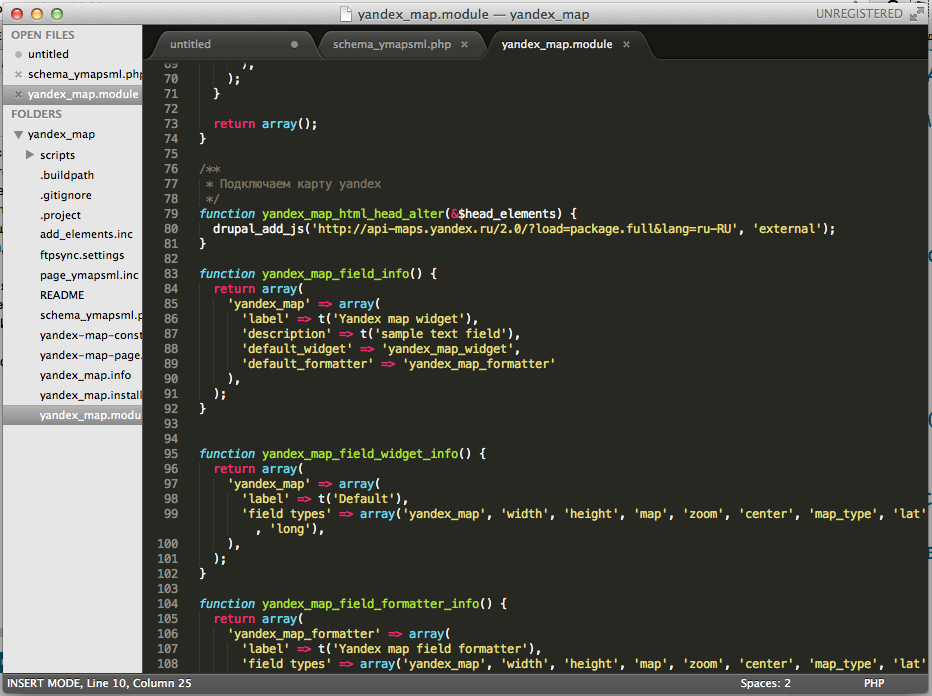
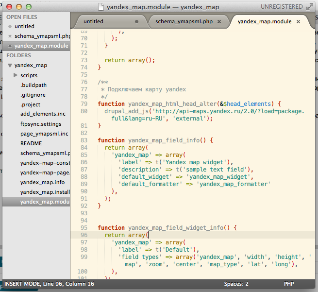
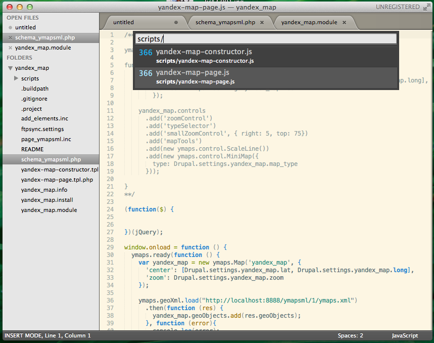
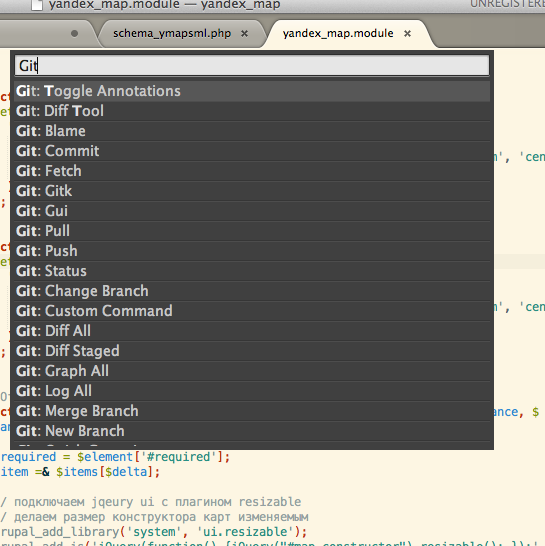
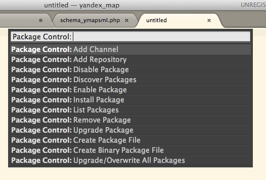
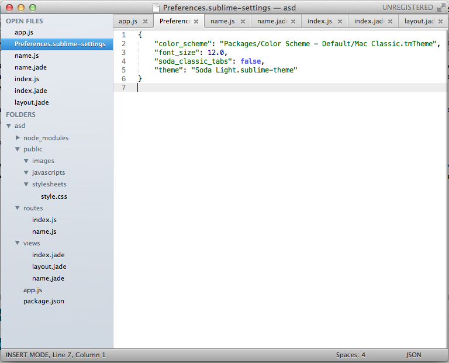
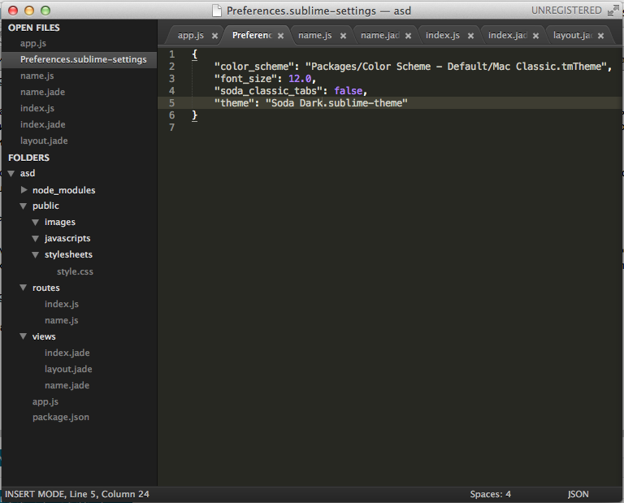

Вступление
Практически все свое время над кодом провожу в редакторе vim (MacVim), на гитхабе есть даже репозиторий с моим конфигурационным файлом. Кому интересно, можете посмотреть, форкнуть: https://github.com/aliev/.vim
Но попробовать чего то новенького тоже очень хочется. И вот я решил попробовать Sublime Text 2. Сразу хотелось бы развеять все мифы по поводу его платности. Редактор совершенно бесплатный! В версии без лицензии нет ограничений на функциональность, единственное что вам будет мешать - редко всплывающее окно, которое убирается клавишей Esc после сохранения файла с просьбой купить лицензию редактора. Кстати, купленная лицензия действует на неограниченное количество компьютеров и операционных систем (Mac, Win, Lin).
За Sublime Text 2 я следил очень давно, часто обновлял его, смотрел и читал о его новых функциях. Обновления выходили очень часто и выходят по сей день. То есть, он очень хорошо и активно развивается, скорость откликов на просьбы пользователей от разработчиков просто удивляет. И вот наконец я переборол свой страх и решил немного "изменить" виму ;)
За время его "альфа" и "бета" существование для Sublime появилось множество расширений, о которых я тоже хотел бы рассказать.
Вот так выглядит окно редактора с подсветкой кода для PHP и стандартной темной темой Monokai:

В комплект редактора входят и множество других цветовых схем, включая мою любимую - Solarized Light:

Все очень красиво, за исключением конечно слова UNREGISTRED в заголовке окна. Но кому оно мешает?
Первое что я сделал это немного подправил файл конфигурации редактора и файлы конфигураций для определенных типов файлов (что то вроде FileType в виме). Все настройки редактора хранятся в отдельных файлах в формате JSON, редактирование которых открывается через определенный пункт меню редактора.
Что мне очень понравилось в Sublime Text 2 это некий quick open, для быстрого открытия файлов проекта и доступа ко всем пунктам меню и командам редактора.
Например нам необходимо быстро открыть файл в проекте. Для этого жмем Ctrl+P и вводим название или путь к файлу в текущем проекте:

Для доступа к определенным пунктам меню или командам редактора жмем Ctrl+Shift+P, аналогично вводя название команды или пункта меню:

Теперь о расширениях
Расширения для редактора пишутся посредством встроенного API на языке Python. Сам редактор имеет встроенную питоновскую консоль, в которой можно отлаживать написанные скрипты.
К счастью писать самостоятельно мне ничего не пришлось, все расширения были уже написаны сообществом. Так же был сделан очень удобный менеджер пакетов, через него можно легко находить и устанавливать необходимые для работы расширения.
Вот ссылка на плагин http://wbond.net/sublime_packages/package_control
Ставится он очень легко, достаточно открыть консоль сублайма комбинацией ctrl+` и вставить туда следующий питоновский код:
import urllib2,os; pf='Package Control.sublime-package'; ipp=sublime.installed_packages_path(); os.makedirs(ipp) if not os.path.exists(ipp) else None; urllib2.install_opener(urllib2.build_opener(urllib2.ProxyHandler())); open(os.path.join(ipp,pf),'wb').write(urllib2.urlopen('http://sublime.wbond.net/'+pf.replace(' ','%20')).read()); print 'Please restart Sublime Text to finish installation'
Все, плагин установлен. Теперь перезагружаем редактор.
Что бы получить доступ к командам плагина нажимаем Ctrl+Shift+P и вводим ключевое слово Package Control. Из списка команд нам доступно установка пакетов, соответственно их удаление, добавление репозитория пакета, поиск пакетов, обновление и т.д.

Давайте теперь установим несколько пакетов. Я установил ftpsync, phpdoc, git, zen coding и nodejs. Для установки пакетов опять же нажимаем комбинацию клавиш Ctrl+Shift+P вводим Package Control: Install Package и далее в поиске вводим название пакета, который мы хотим установить. После каждой установки пакетов требуется перезагрузка редактора.
Список пакетов написанных сообществом можно посмотреть по ссылке http://wbond.net/sublime_packages/community он довольно внушителен, в списке есть даже поддержка "экзотических" языков.
Меняем тему оформления самого редактора
Кроме цветовых схем можно так же менять темы оформления самого редактора в целом. То есть вы можете поменять цвета и оформление всех графических элементов редактора, включая вкладки. Для себя я поставил тему Soda Light. В итоге вот что у меня получилось

Тема Soda Dark выглядет так

Для установки данной темы нам нужно добавить ее репозиторий в Package Control. Сама тема находится на Github по адресу https://github.com/buymeasoda/soda-theme/ он и будет выступать в качестве репозитория.
Что бы добавить репозиторий нажимаем комбинацию Crtl+Shift+P вводим Package Control: Add Repository и в появившейся строке для ввода адреса репозитория вводим ссылку на Github нашей темы: https://github.com/buymeasoda/soda-theme/
Все, наш репозиторий добавлен. Снова нажимаем комбинацию Ctrl+Shift+P вводим Package Control: Install Package и далее вводим название темы, которую хотим установить. В нашем случае название темы - soda.
Что бы тема оформления применилась необходимо отредактировать конфигурационный файл текущего пользователя. В настройках редактора открываем Settings - User. Прописываем следующие строчки для темной темы:
{
"color_scheme": "Packages/Color Scheme - Default/Monokai.tmTheme",
"font_size": 12.0,
"soda_classic_tabs": false,
"theme": "Soda Dark.sublime-theme"
}
Для светлой:
{
"color_scheme": "Packages/Color Scheme - Default/Monokai.tmTheme",
"font_size": 12.0,
"soda_classic_tabs": false,
"theme": "Soda Light.sublime-theme"
}
Если в некоторых местах редактора цвета не применились перезапустите его.
Ну вот пожалуй это все. В следующих статьях я постараюсь написать о полезных расширениях, с которыми мне приходилось работать. Последнюю сборку редактора можно скачать по ссылке http://www.sublimetext.com/dev
UPD: Установка из PPA для Ubuntu
Добавляем PPA репозиторий:
sudo add-apt-repository ppa:webupd8team/sublime-text-2
sudo apt-get update
Установка стабильной версии:
sudo apt-get install sublime-text
Установка dev версии
sudo apt-get install sublime-text-dev